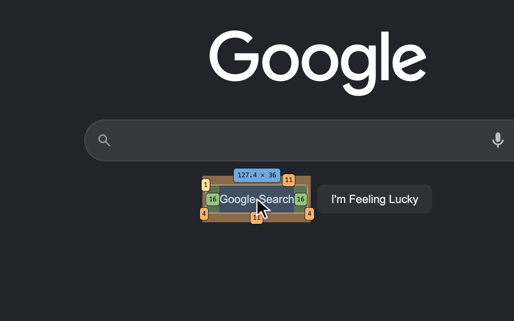
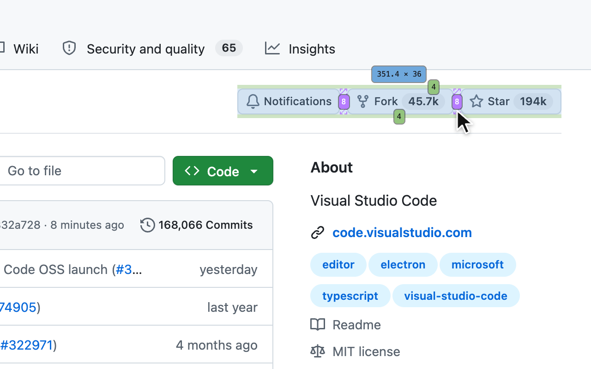
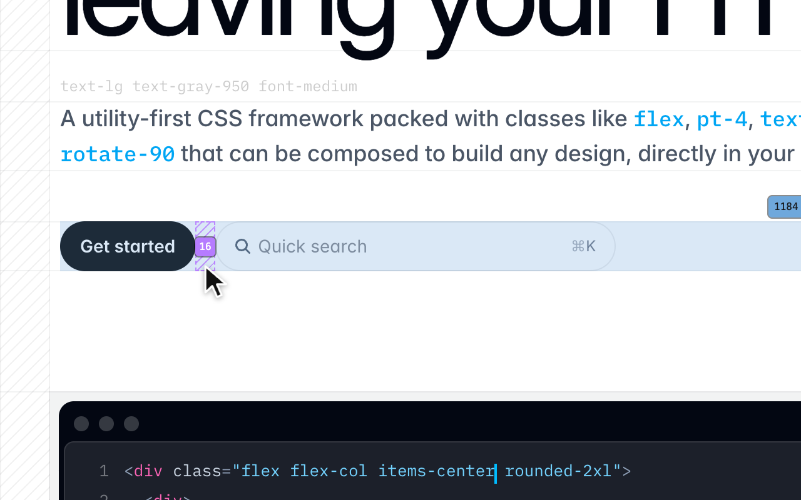

Measure
Hover any element on any page to see its margin, border, padding and size, a flex or grid gap, and where it sits.
Add to ChromeFree, from the Chrome Web Store.
Hover anything here. Escape turns it off.
Trying it on this page needs a mouse.
Watch it work
See it on



How to use it
- Press Option Shift M (Alt Shift M on Windows and Linux), or click the toolbar icon.
- Hover any element: its margin, border, padding and size appear on it, with a flex or grid gap's value and a placed element's offsets.
- Press Escape to turn it off. Nothing of it stays on the page.
Privacy
Measure runs only on the tab where you turn it on. It stores nothing and sends nothing anywhere. The privacy policy says exactly what it reads.